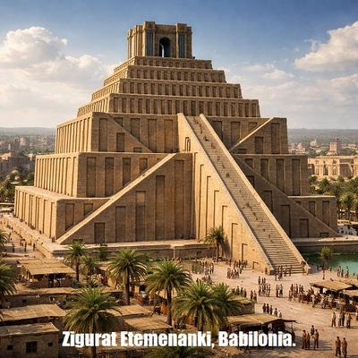

El relato de la Torre de Babel, narrado en Génesis 11:1-9, es uno de los pasajes más conocidos de la Biblia. Según esta historia, al principio toda la humanidad hablaba un solo idioma, hasta que decidió construir una torre que alcanzara el cielo. Y como castigo por esta supuesta arrogancia, Yahvé confundió sus lenguas, provocando la dispersión de los pueblos y el origen de los distintos idiomas.


Aunque para muchos creyentes esta es la narración literal de un hecho real (por ser «la palabra de Dios»), a la luz de nuestros conocimientos actuales es obvio que se trata sólo de una leyenda impregnada de elementos fantásticos. Lo sorprendente es, sin embargo, que cuando se analiza desde la arqueología, la historia y la lingüística, lejos de ser un relato completamente inventado, resulta ser un mito con raíces en cierta realidad histórica.
Efectivamente, la leyenda de Babel parece inspirada en una estructura real: los zigurats o templos de la antigua Mesopotamia, que tenían forma de pirámide escalonada. Y especialmente parece referirse, según los entendidos en el tema, al Etemenanki, gran templo de Babilonia dedicado al dios Marduk. Las evidencias históricas indican que este zigurat fue reconstruido por los reyes Nabopolasar y Nabucodonosor II en el siglo VI AEC, y que tenía una altura de unos 91 metros (unos 300 pies), según fuentes antiguas como la tablilla Esagila. Sin duda algo impresionante para la época. Y en su cima había un santuario, lo que reforzaba la idea simbólica de conexión entre el cielo y la tierra.
Para un observador antiguo, esta estructura debió parecer literalmente una «torre que llegaba al cielo». Y esto habría pasado particularmente a los hebreos exiliados en Babilonia a partir del año 586 AEC, por orden del rey Nabucodonosor II, después de la destrucción del Templo de Jerusalén. Los académicos coinciden en que el exilio en Babilonia fue el catalizador principal para la redacción del Antiguo Testamento (el Tanaj) tal como hoy lo conocemos, así como también fue determinante para que el pueblo hebreo pasara de tener una religión basada en sacrificios en el Templo, a convertirse en la «Gente del Libro», centrada en el estudio de las Escrituras. Sin embargo, aquella impresión visual que tuvieron al observar el imponente templo piramidal de Marduk, no habría dado por resultado la descripción objetiva de una estructura histórica, sino la reinterpretación teológica de una construcción real.
El propio nombre dado a la mítica estructura, «Babel», revela la intención del autor bíblico. En acadio, bāb-ili significa «puerta de Dios», un nombre prestigioso. Sin embargo, el texto hebreo lo asocia con bālāl, que significa «confundir». Un recurso que no es casual: se trata de una forma de ridiculizar a Babilonia mediante un juego lingüístico. Lo que para los babilonios era un símbolo de grandeza, el autor bíblico lo transforma en un símbolo de caos y castigo divino. Por cierto, la antigua ciudad de Babilonia corresponde hoy al territorio de Irak. Sus ruinas se localizan en la actual gobernación de Babil, aproximadamente a 80 o 90 kilómetros al sur de Bagdad, la capital.
Algunas interpretaciones sugieren que el mito de la Torre de Babel podría haber surgido tras la caída o deterioro del zigurat Etemenanki. Sin embargo, no existe evidencia arqueológica que respalde que una catástrofe de ese tipo haya originado el relato. Lo que sí sabemos es que estas estructuras requerían mantenimiento constante y podían deteriorarse con el tiempo. Pero transformar ese hecho en un castigo divino universal, pertenece al terreno de la imaginación religiosa, no al de la evidencia.
Ahora bien, uno de los aspectos más ignorados por quienes leen la Biblia literalmente, es el alto nivel de desarrollo intelectual de la civilización babilónica. Los babilonios asociaban sus dioses con los astros (su religión era astral), y registraban observaciones celestes en tablillas cuneiformes, siendo además capaces de predecir eclipses con notable precisión, desarrollando algunos de los primeros sistemas astronómicos documentados (los babilonios adoptaron y perfeccionaron el sistema de escritura cuneiforme desarrollado por los sumerios, otro pueblo semita). Y aunque mezclaban observación con astrología, su conocimiento del cielo era real y avanzado. Por lo que, en ese contexto, aunque los zigurats eran templos, pudieron también servir como puntos elevados para observar el firmamento.
En cuanto a la afirmación bíblica de que los idiomas surgieron como un castigo divino, es, desde el punto de vista científico, completamente insostenible. La lingüística moderna ha demostrado que los idiomas evolucionan gradualmente a lo largo del tiempo, se diversifican cuando grupos humanos se separan geográficamente, y cambian mediante procesos naturales como variación fonética, innovación y contacto cultural. Así, por ejemplo, el latín dio origen al español, francés, italiano y portugués, sin intervención divina alguna. Y este mismo proceso, extendido durante miles de años, explica la diversidad lingüística global. No hay evidencia alguna de un momento histórico en que toda la humanidad hubiera hablado un solo idioma, ni de una «confusión repentina» de lenguas.
Así que resumamos diciendo que el relato de la Torre de Babel no es una crónica histórica, sino una narración simbólica, aunque construida a partir de elementos reales, reinterpretados con fines teológicos. Existieron en efecto, torres monumentales en Babilonia, que impresionaron profundamente a los pueblos antiguos —incluyendo a los hebreos exiliados en Babilonia—, pero definitivamente no provocaron el origen de los idiomas, ni fueron destruidas por un acto divino para castigar la «arrogancia humana».
Conviene señalar que el edificio más alto del mundo es actualmente el Burj Khalifa, ubicado en Dubái, Emiratos Árabes Unidos, inaugurado en 2010, que cuenta con una altura oficial de 828 metros (2.717 pies) hasta su cúspide estructural, y posee más de 160 plantas. Mientras que el Empire State Building de Nueva York, que tiene una altura de casi la mitad, 443 metros (1.454 pies) hasta la punta de su antena, y ostentó el título del edificio más alto del mundo durante 41 años, desde su finalización en 1931 hasta 1972. Sin embargo, ahora existen en el planeta unos 11 edificios que exceden los 500 metros de altura. Todas son edificaciones que superan en más de cinco veces la altura del zigurat Etemenanki en Babilonia, asociado con la Torre de Babel. De hecho, el ser humano hasta ha llegado hasta la Luna. Pero «Dios» nunca más volvió a manifestarse castigándonos por ese atrevimiento.
Aceptar el mito como una explicación literal del mundo, implica ignorar siglos de conocimiento acumulado en arqueología, historia y lingüística. Mientras que entenderlo como lo que realmente es —una construcción cultural de su tiempo—, permite apreciar mejor tanto la riqueza del pasado como los mecanismos mediante los cuales las religiones han intentado explicar la realidad.
En última instancia, la Torre de Babel no nos habla del origen de los idiomas, sino de algo mucho más humano: la tendencia a crear relatos para explicar lo que en su momento no se comprendía.
[Godless Freeman]
Comentarios
Comments powered by Disqus